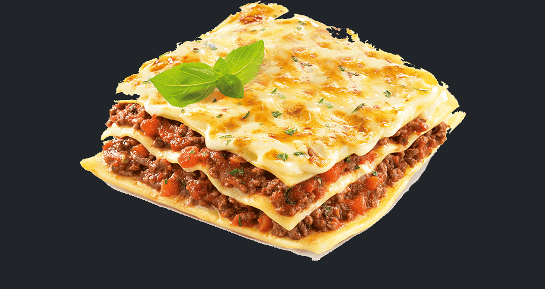

This page will help you make a great lasagna. Heaven in mouth!!!
There are two types of awesome lasagna to choose from on the website,
we have options for carnivores and vegans

Vegan Lasagna
Ingredients:
1 cup dried red lentils
25-ounce jars marinara
1 cup raw cashews
16 ounce firm tofu, patted dry with paper towels
1/2 cup nutritional yeast
3 tablespoons fresh lemon juice, from about 2 lemons
1 teaspoon salt
Instructions:
First, cook your red lentils. Add 1 cup dried red lentils and 3 cups of water to a medium pot. Bring to a boil, and then simmer for about 20 minutes. Drain the lentils in a fine strainer, and then add to a large bowl. Add both jars of marinara to the bowl with the lentils and mix to combine. Set aside.
Preheat the oven to 350 degrees.
Make the Cashew-Tofu Ricotta: Add the cashews to a food processor and process until fine and crumbly. Then add the tofu in chunks, nutritional yeast, lemon juice, salt, basil, oregano and garlic powder to the food processor. Pulse until well combined and pretty smooth.
Assembling the lasagna: Add about 1 cup of marinara sauce (with the cooked lentils) to the bottom of a large 9 x 13 inch casserole dish or lasagna pan. Spread it around evenly. Next add 4-5 lasagna noodles (uncooked). Spread half of the Cashew-Tofu Ricotta on top of the noodles. Top with half of the spinach. Add about 1 cup of the marinara sauce over the spinach, then place 4-5 lasagna noodles on top. Spread the rest of the Ricotta over the noodles, then the rest of the spinach. Place 4-5 more noodles on top of the spinach, and then pour the rest of the sauce over the top, evenly.
If using the mozzarella topping, simply remove the lasagna after 40 minutes of cooking in the oven. Spoon on the mozzarella, and pop it back in the oven for another 20 minutes. Remove, let cool for at least 15 minutes and serve.